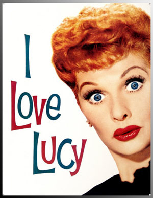
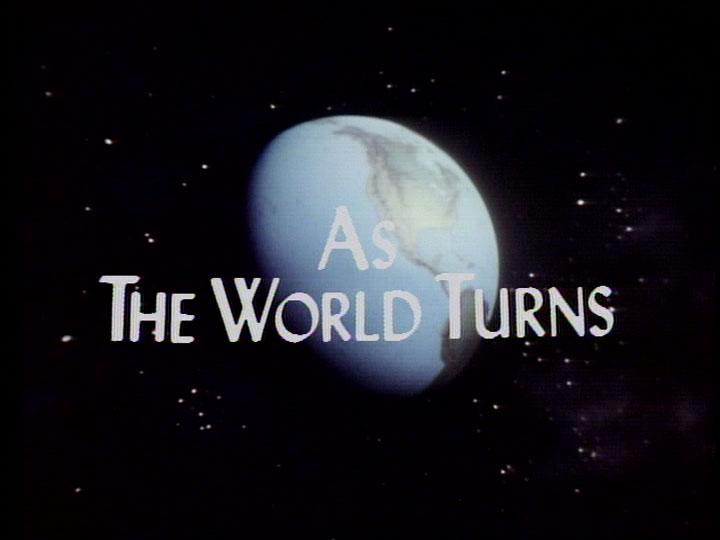

Сериалы пятидесятых
Пятидесятые года прошлого столетия ознаменовались появлением таких распространенных сериальных жанров, как комедийный сериал или «ситком».
Ситуационная комедия, или ситком (англ. situation comedy, sitcom) – разновидность комедийных радио- и телепрограмм, с постоянными основными персонажами и местом действия. Изначально появившийся на радио в США в 1920-х годах, к 1970-м годам ситком выделился в жанр почти исключительно телевизионной комедии и получил широкое распространение в телесериалах. Для телевизионных ситкомов характерен определённый временной формат – как правило, 20–30 минут, включая титры и рекламу (если она есть). Первые ситкомы, как правило, снимались в студии перед зрителями, поэтому для них характерен закадровый смех.
Некоторые ситкомы базируются на контрастах. В драматических сериалах и «мыльных операх» под этим термином подразумевается то, что главному герою противостоит злодей. В ситкоме это понятие расширено и не имеет чётких границ. Контраст в ситкоме – не столько общее направление, «хороший-плохой», сколько подчёркивание особенностей. Примерами могут служить «Я женат на Джоане», «Я люблю Люси», «Дарма и Грег». В этих сериалах прямой, приземлённый, рациональный муж женится на ветреной, смешной, эмоциональной женщине. Это и создаёт абсурдные ситуации.
Примером такого сериала является ситком «Я люблю Люси» (англ. I Love Lucy), повествующий о жизни домохозяйки. Жена певца и актёра, Люси, тоже мечтает оказаться на сцене, но её муж всячески противится этому, считая её неталантливой. Для него она домохозяйка: любящая жена и мать. В ответ на это Люси демонстрирует свой талант дома, устраивая невероятные комические сцены. «Я люблю Люси» стал революционным ситкомом в плане многокамерной съемки. Каждая сцена в шоу снималась одновременно тремя камерами, и в итоге режиссер отбирал наиболее выгодные кадры. Звезда шоу Люсиль Болл впоследствии стала телевизионной иконой.
Так же в моде по-прежнему остаются мелодраматические сериалы, перекочевавшие с радио, именуемые «мыльными операми».
Мыльная опера (англ. Soap opera) – один из форматов телесериалов, который отличается последовательным изложением сюжетной линии в эпизодах сериалов на телевидении и радио. Название произошло от того, что в ранних мыльных операх размещалась реклама таких компаний-производителей мыла как Procter & Gamble, Colgate-Palmolive и Lever Brothers. Первые мыльные оперы начали выходить на радио по будням в дневное время, когда у радиоприемников были преимущественно домохозяйки, и таким образом мыло было направлено конкретно на женскую аудиторию. Мыльные оперы также отличаются огромным количеством серий и снимаются, транслируются десятилетиями.
На экранах стартует сериал «Пока вращается мир» (англ. As the world turns) – это американская телевизионная мыльная опера, выходившая ежедневно по будням на канале CBS. Действие разворачивается в вымышленном городке Окдейл, штат Иллинойс. Сериал впервые появился на экранах 2 апреля 1956 года и первоначально имел хронометраж 30 минут, что было новшеством, поскольку до этого телевизионные сериалы выходили сериями по 15 минут.
Неспешное течение психологических исканий и бытовых проблем главных семейств, возглавляемых профессионалами (докторами, юристами, полицейскими и т. д.) характеризовало центральный сюжет «Пока вращается мир» и в конце пятидесятых, и в наше время. С годами этот подход стал «золотым стандартом» для всех мыльных опер. Тогда как 15-минутные сериалы чаще всего концентрировали внимание на центральном персонаже, получасовой формат позволил создателям представить истории целого ряда героев в рамках семейной саги. Инновацией так же было введение закадрового комментирования основных драматических эпизодов из жизни горожан.
Стиль повествования – медленный, многословный, эмоционально напряжённый, не менялся годами. Введение каждого нового персонажа было тщательно подготовлено и обосновано, и, чаще всего, новичок оказывался тем или иным способом связан с одной из центральных семей. Шоу заработало репутацию довольно консервативного сериала.